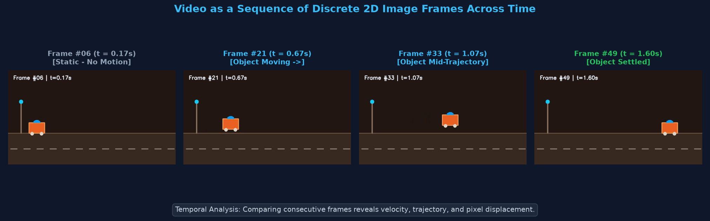
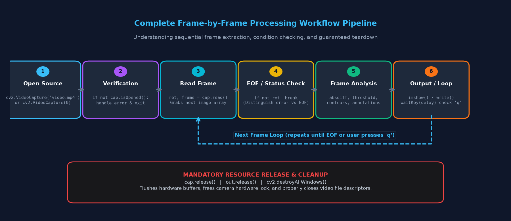
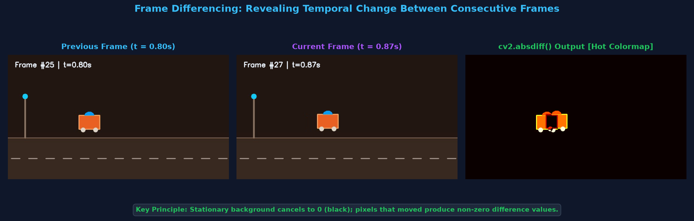
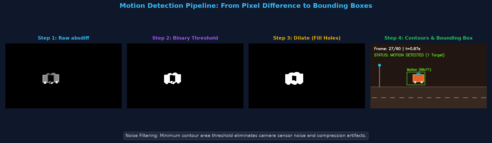
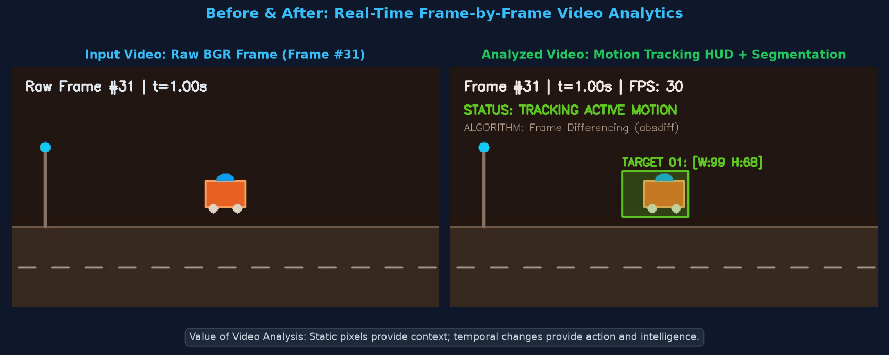
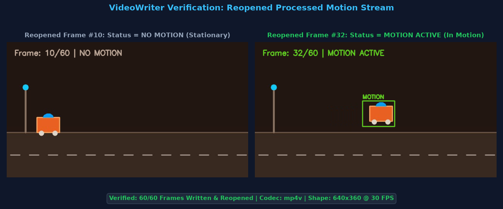

Temporal Dynamics, Consecutive Frame Differencing (cv2.absdiff), Motion Masking, Tracking & Video Analytics
Computer Vision mein ab tak humne single static images par processing ki hai (filtering, edge detection, contour finding). Lekin real world mein camera continuous streams capture karta hai. Video Processing ka matlab hai ordered time-series images (frames) ko process karke dynamic real-world events ko analyze karna.

Video processing pipelines mein use hone wale essential technical terms ka concise reference:
| Technical Term | OpenCV Representation | Beginner Explanation & Meaning |
|---|---|---|
| Frame & Sequence | ndarray (H, W, 3) |
Ek individual digital image; inka ordered set milkar video sequence banata hai. |
| FPS (Frame Rate) | cap.get(cv2.CAP_PROP_FPS) |
Ek second mein display hone wale frames ki sankhya (Standard: 24, 30, ya 60 FPS). |
| Timestamp (t) | (frame_idx - 1) / FPS |
Video start hone ke baad frame ka elapsed time seconds ya milliseconds mein. |
| Temporal Information | Frame-to-Frame Deltas | Time ke saath pixels mein aane wale badlaav (motion, velocity, acceleration). |
| VideoCapture | cv2.VideoCapture() |
OpenCV class jo video files, webcams, aur IP streams ko decode karti hai. |
| cap.read() | ret, frame = cap.read() |
Next frame grab karti hai. ret=True agar frame mila, ret=False agar EOF / error. |
| cap.isOpened() | bool |
Check karta hai ki video source successfully initialize aur accessible hua ya nahi. |
| cap.release() | Hardware teardown | Camera driver lock aur file descriptor memory ko release karta hai (Mandatory!). |
| Frame Preprocessing | Grayscale + Blur | Noise aur color variations hatane ke liye frames ko simplify karna. |
| Frame Difference | cv2.absdiff(curr, prev) |
Do consecutive frames ka absolute pixel-wise subtraction jo motion highlight karta hai. |
| Event Loop & waitKey | cv2.waitKey(delay) |
GUI window refresh karta hai aur keyboard inputs ('q' key) capture karta hai. |
Duration (seconds) = Total Frame Count / FPSVideo processing ka standard production lifecycle 8 sequential steps follow karta hai:

cap = cv2.VideoCapture("video.mp4") ya webcam index 0 initialize karein.if not cap.isOpened() se confirm karein ki file path valid hai aur codec supported hai.ret, frame = cap.read() next image decode karta hai.ret is False, toh loop break karein. Video khatam ho gaya (End-of-File).cv2.imshow() mein dikhayein ya out.write() se file mein save karein.cv2.waitKey(1) & 0xFF == ord('q') check karke user interruption permit karein.cap.release() aur cv2.destroyAllWindows() call karein taaki resource leak na ho.ret ki value False aati hai. Iska matlab file corrupt nahi hai, balki stream terminate ho chuki hai.
Video open karne se pehle path validation, metadata extraction, aur first frame properties check karna industry standard practice hai:
import cv2
video_path = "motion_sample.mp4"
cap = cv2.VideoCapture(video_path)
# 1. Graceful error handling for missing/corrupted files
if not cap.isOpened():
print(f"Error: Unable to open video source '{video_path}'. Check path or codec!")
exit()
# 2. Extract video metadata
width = int(cap.get(cv2.CAP_PROP_FRAME_WIDTH))
height = int(cap.get(cv2.CAP_PROP_FRAME_HEIGHT))
fps = cap.get(cv2.CAP_PROP_FPS)
total_frames = int(cap.get(cv2.CAP_PROP_FRAME_COUNT))
duration = total_frames / fps if fps > 0 else 0.0
print(f"Resolution : {width} x {height}")
print(f"Frame Rate : {fps:.2f} FPS")
print(f"Total Frames: {total_frames}")
print(f"Duration : {duration:.2f} seconds")
# 3. Read the first frame and inspect channels
ret, first_frame = cap.read()
if ret and first_frame is not None:
channels = first_frame.shape[2] if len(first_frame.shape) == 3 else 1
print(f"First Frame : Shape={first_frame.shape}, Channels={channels}, Dtype={first_frame.dtype}")
# 4. Safe resource release
cap.release()
A loop that maintains frame indices, computes real-time timestamps, and applies edge detection with a visual HUD:
import cv2
cap = cv2.VideoCapture("motion_sample.mp4")
fps = cap.get(cv2.CAP_PROP_FPS)
frame_idx = 0
while cap.isOpened():
ret, frame = cap.read()
if not ret:
print("End of video stream reached.")
break
frame_idx += 1
# Calculate exact timestamp in seconds
timestamp = (frame_idx - 1) / fps if fps > 0 else 0.0
# 1. Preprocess: Convert to grayscale
gray = cv2.cvtColor(frame, cv2.COLOR_BGR2GRAY)
# 2. Apply Canny edge detection
edges = cv2.Canny(gray, threshold1=50, threshold2=150)
# 3. Add visual HUD overlay (Frame counter & timestamp)
cv2.putText(edges, f"Frame #{frame_idx} | Time: {timestamp:.2f}s", (20, 35),
cv2.FONT_HERSHEY_SIMPLEX, 0.65, 255, 2)
# 4. Display result (Press 'q' to stop early)
cv2.imshow("Processed Frame Edges", edges)
if cv2.waitKey(25) & 0xFF == ord('q'):
print("Interrupted by user.")
break
cap.release()
cv2.destroyAllWindows()
Motion detection ka sabse fundamental principle hai Frame Differencing. Do consecutive grayscale frames ko subtract karke static background cancel kiya jata hai:

import cv2
cap = cv2.VideoCapture("motion_sample.mp4")
# Read initial frame as baseline
ret, prev_frame = cap.read()
if not ret:
print("Cannot read video stream.")
exit()
prev_gray = cv2.cvtColor(prev_frame, cv2.COLOR_BGR2GRAY)
while cap.isOpened():
ret, curr_frame = cap.read()
if not ret:
break
curr_gray = cv2.cvtColor(curr_frame, cv2.COLOR_BGR2GRAY)
# Absolute pixel difference between current frame and previous frame
diff = cv2.absdiff(curr_gray, prev_gray)
# Update previous frame reference for next iteration
prev_gray = curr_gray
cv2.imshow("Raw Difference (Motion Energy)", diff)
if cv2.waitKey(25) & 0xFF == ord('q'):
break
cap.release()
cv2.destroyAllWindows()
Raw difference image mein se noise filter karke moving objects ke around bounding box draw karne ka complete 4-step pipeline:

import cv2
cap = cv2.VideoCapture("motion_sample.mp4")
ret, prev_frame = cap.read()
prev_gray = cv2.cvtColor(prev_frame, cv2.COLOR_BGR2GRAY)
while cap.isOpened():
ret, curr_frame = cap.read()
if not ret:
break
curr_gray = cv2.cvtColor(curr_frame, cv2.COLOR_BGR2GRAY)
# 1. Compute absolute temporal difference
diff = cv2.absdiff(curr_gray, prev_gray)
# 2. Gaussian blur to suppress camera sensor noise
blurred = cv2.GaussianBlur(diff, (5, 5), 0)
# 3. Binary thresholding (pixels > 25 become white motion mask)
_, thresh = cv2.threshold(blurred, 25, 255, cv2.THRESH_BINARY)
# 4. Dilate mask to merge broken object fragments
dilated = cv2.dilate(thresh, None, iterations=3)
# 5. Find contours of white motion blobs
contours, _ = cv2.findContours(dilated, cv2.RETR_EXTERNAL, cv2.CHAIN_APPROX_SIMPLE)
annotated = curr_frame.copy()
motion_detected = False
for cnt in contours:
# Crucial: Filter out tiny noise blobs by area threshold
if cv2.contourArea(cnt) > 300:
motion_detected = True
x, y, w, h = cv2.boundingRect(cnt)
# Draw green bounding rectangle around moving target
cv2.rectangle(annotated, (x, y), (x + w, y + h), (0, 255, 0), 2)
cv2.putText(annotated, f"Motion ({w}x{h})", (x, y - 8),
cv2.FONT_HERSHEY_SIMPLEX, 0.55, (0, 255, 0), 2)
status_text = "STATUS: MOTION DETECTED" if motion_detected else "STATUS: NO MOTION"
status_col = (0, 255, 0) if motion_detected else (180, 180, 180)
cv2.putText(annotated, status_text, (20, 35),
cv2.FONT_HERSHEY_SIMPLEX, 0.65, status_col, 2)
cv2.imshow("Real-Time Motion Tracker", annotated)
prev_gray = curr_gray
if cv2.waitKey(25) & 0xFF == ord('q'):
break
cap.release()
cv2.destroyAllWindows()
Processed video frames ko disk par save karne ke liye cv2.VideoWriter ka use aur uske output ko reopen karke automated integrity verification:


import cv2
import time
cap = cv2.VideoCapture("motion_sample.mp4")
width = int(cap.get(cv2.CAP_PROP_FRAME_WIDTH))
height = int(cap.get(cv2.CAP_PROP_FRAME_HEIGHT))
fps = cap.get(cv2.CAP_PROP_FPS)
# 1. Initialize VideoWriter (FourCC codec, FPS, dimensions tuple)
fourcc = cv2.VideoWriter_fourcc(*'mp4v')
output_path = "motion_detected_output.mp4"
out = cv2.VideoWriter(output_path, fourcc, fps, (width, height))
ret, prev_frame = cap.read()
prev_gray = cv2.cvtColor(prev_frame, cv2.COLOR_BGR2GRAY)
out.write(prev_frame) # Write first frame
frames_written = 1
t_start = time.perf_counter()
while cap.isOpened():
ret, curr_frame = cap.read()
if not ret:
break
curr_gray = cv2.cvtColor(curr_frame, cv2.COLOR_BGR2GRAY)
diff = cv2.absdiff(curr_gray, prev_gray)
thresh = cv2.threshold(cv2.GaussianBlur(diff, (5, 5), 0), 25, 255, cv2.THRESH_BINARY)[1]
dilated = cv2.dilate(thresh, None, iterations=3)
contours, _ = cv2.findContours(dilated, cv2.RETR_EXTERNAL, cv2.CHAIN_APPROX_SIMPLE)
annotated = curr_frame.copy()
motion_found = False
for cnt in contours:
if cv2.contourArea(cnt) > 300:
motion_found = True
x, y, w, h = cv2.boundingRect(cnt)
cv2.rectangle(annotated, (x, y), (x + w, y + h), (34, 197, 94), 2)
cv2.putText(annotated, "TARGET", (x, y - 6),
cv2.FONT_HERSHEY_SIMPLEX, 0.5, (34, 197, 94), 2)
status_str = "MOTION ACTIVE" if motion_found else "NO MOTION"
status_col = (34, 197, 94) if motion_found else (148, 163, 184)
cv2.putText(annotated, f"Analysis: {status_str}", (20, 35),
cv2.FONT_HERSHEY_SIMPLEX, 0.65, status_col, 2)
# VideoWriter requires 3-channel BGR image
out.write(annotated)
frames_written += 1
prev_gray = curr_gray
t_end = time.perf_counter()
# Mandatory: Release both input and output streams
cap.release()
out.release()
total_time = t_end - t_start
proc_fps = frames_written / total_time if total_time > 0 else 0
print(f"Saved {frames_written} frames to '{output_path}' in {total_time:.3f}s ({proc_fps:.1f} FPS)")
# 2. Automated Reopen & Verification
check_cap = cv2.VideoCapture(output_path)
reopened_count = int(check_cap.get(cv2.CAP_PROP_FRAME_COUNT))
check_cap.release()
print(f"Integrity Check: Successfully verified {reopened_count} readable frames on disk!")
Frame-by-frame temporal analysis modern computer vision industry ki backbone hai:
Connection: Stationary security cameras 24x7 static background monitor karte hain. Frame differencing unauthorized human ya vehicle intrusion detect karke automated siren ya SMS alert trigger karta hai.
Connection: Highway cameras road par virtual detection lines draw karte hain. Jaise hi vehicle temporal difference line ko cross karta hai, counter increment ho jata hai aur traffic flow report generate hoti hai.
Connection: High-speed cameras athlete ke frames track karke joint angles, stride length, aur ball trajectory velocity calculate karte hain taaki sports performance optimize ho sake.
Connection: Manufacturing plants mein moving parts ke frames compare karke packaging defects, missing labels, ya misaligned components instant detect kiye jaate hain.
| Error / Symptom | Root Cause | Industry Solution |
|---|---|---|
cap.isOpened() is False |
Galat video path, missing extension, ya unsupported video codec. | Path double-check karein; raw string r"path" use karein; confirm video plays in VLC. |
ret is False on 1st frame |
Camera busy/locked by another app ya video stream corrupted. | Other camera apps (Zoom/Meet) close karein; test with a verified local video file. |
| GUI Window Freezes / Not Responding | cv2.waitKey() missing hai ya delay 0 set hai. |
Display loop ke andar hamesha cv2.waitKey(1) ya cv2.waitKey(25) lagayein. |
| VideoWriter creates 0 KB file | Frame dimension mismatch ya single-channel grayscale write karna. | VideoWriter dimensions (width, height) frame shape se match karein; convert gray to BGR. |
| Headless Environment Crash | cv2.imshow() fails on cloud servers / Docker without display. |
Headless server par cv2.imshow() skip karein; direct VideoWriter ya file output save karein. |
| High CPU Usage & Video Lag | Heavy processing har frame par high-resolution (4K) par run ho rahi hai. | Frames ko cv2.resize() karke 640x360 downscale karein ya frame skipping (process every 2nd frame) karein. |
cv2.absdiff(curr, prev) static scenery ko 0 par cancel karke moving objects isolate karta hai.absdiff → GaussianBlur → threshold → dilate → findContours → boundingRect.cap.release() aur out.release() call karein driver lockouts aur file corruption prevent karne ke liye.Answer: Camera ke vibrate hone se background pixels bhi consecutive frames ke beech displace ho jayenge. Isse poori image mein high difference values aayengi aur false motion alerts trigger ho jayenge. Is problem ko fix karne ke liye Video Stabilization ya Optical Flow algorithms use kiye jaate hain.
Answer: Frame differencing se aksar moving object ke sirf edges aate hain aur uniform color wale parts beech se gayab ho jate hain (hollow objects). cv2.dilate() white pixels ko expand karke un gaps aur holes ko fill karta hai taaki cv2.findContours() ek single solid bounding box detect kar sake.
Answer: OpenCV images NumPy array hoti hain jinka shape (height, width) hota hai, lekin cv2.VideoWriter constructor tuple (width, height) expect karta hai. Agar dimensions swap ho jayein, toh VideoWriter fail ho jata hai aur disk par 0 KB file banti hai.